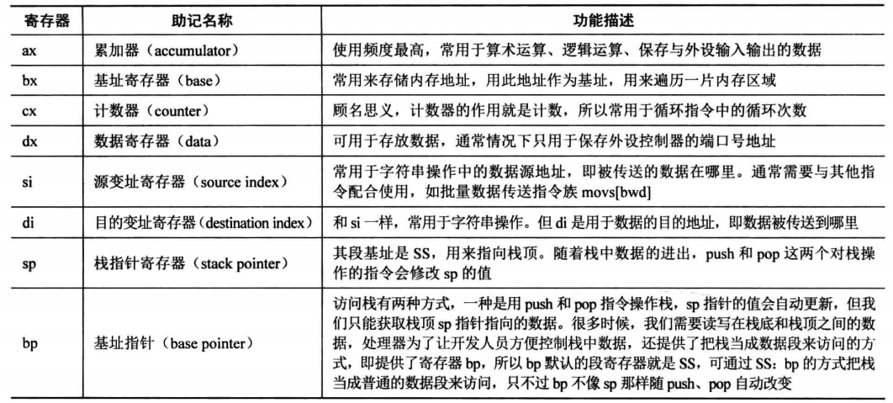

本节将讨论地址、vstart以及实模式CPU的相关基本概念。
地址、vstart和section
让我们对比下有和没有 vstart的区别：
可以看出没加 vstart ，section的默认地址是从 0 开始递增，如果加上了 vstart 后续的地址就会以 vstart 为起始地址递增。
由于 BIOS 默认会将 MBR 第一个扇区数据加载到 0x7c00 ，那么mbr.bin 后续的地址定位就不能以 0 为起始地址了，必须以 0x7c00 才能保证正确的地址访问，如下图所示：
所以 vstart 指令告诉编译器“我知道这段代码会被加载到 vstart 地址，后续地址偏移量都已它为基准”。
CPU
我们知道 CPU 的工作模式是，以 CS:IP 处数据作为指令，将其加载到指令寄存器IR，让后通过指令译码器ID，根据对应指令的操作，通过控制操作系统OC执行相应指令，其中指令格式如下：
根据指令的不同，CPU 可能会去内存取操作数，操作数有可能就在寄存器中，经过 ALU 算术逻辑单元处理后，再将结果返回寄存器或者内存中，接着指令指针寄存器IP，继续取下一条指令执行，如果存在跳转指令，那么 IP 回去相应内存位置读取、解析并执行指令，周而复始，直到停机。
实模式下寄存器

实模式 CPU 内存寻址方式
栈
我们知道栈是一种重要的数据结构， CPU中有栈段 SS 寄存器和栈指针 SP 寄存器，在内存中从高地址往地地址扩展：
其次 CPU 中有两个指令可以操作栈 push 和 pop ：
push ax
;等价于
mov bp,sp
sub bp,2
mov [bp],ax
pop ax
;等价于
mov bp,sp
mov ax,[bp]
add bp,2栈在函数调用中至关重要：
int a=0;
function(int b,int c){
int d;
}
a++;对应的汇编指令：
push c
push b
push ebp
mov ebp,esp ;以上两句等价于 enter
push d
;调用结束返回
mov esp,ebp
pop ebp; 以上两句等价于 leave
;主函数调用 add esp,8 回收变量b、c实模式下跳转

我们知道高级语言中有各种数据类型，如 int、short int、unsigned int 等，不同的数据类型代表了不同的数据范围，那么在汇编语言中同样需要表示不同的数据类型，数据类型伪指令byte、word、dword、qword可以满足此需求，修饰立即数、寄存器或内存，达到类似 C 语言类型转换的功能，在call 指令中也有 near、short、far 修饰符进行类型转换。
标志寄存器 flags
有条件转移
每条指令的执行都会影响标志寄存器，而 jxx 指令会根据标志寄存器的标志位进行跳转。
CPU 与IO接口
任何计算机问题，都可以增加额外的层来解决
CPU 与 IO 外设速度差异太大，不能让 CPU 等待缓慢的IO 外设而浪费宝贵的时间，所以增加了 IO 接口层来匹配其速度差异。IO 接口层具有如下功能：
- 设置数据缓冲，解决 CPU 与外设的速度不匹配
- 设置信号电平转换电路
- 设置数据格式转换
- 提供地址译码
IO 接口是连接 CPU 和硬件的桥梁，端口是 IO 接口开放给 CPU 的接口，一般 IO 接口都有一组端口，端口就是寄存器，有8位、16位和32位宽度的。 Intel 汇编语言采用 目标操作数=源操作数 的格式，和平时用的等式相似。
in 指令拥有从端口中读数据：
in al,dx
in ax,dxout 指令拥有往端口中写数据：
out dx,al;
out dx,ax;
out 立即数,al;
out 立即数,ax;显示
计算机为了显示文本和图像需要通过 IO 接口-显卡，显卡分为 A 卡 和 N 卡，传输数据方式分为并行和串行，并行方式虽然一次传输数据量大，不过要保证同时接收多位难度较大，所以现在一般采用串行传输。
为了控制显示我们可以通过 IO 端口和显存。这里我们使用显存来控制显示输出，显存地址分布如下：
显示器上每个字符占两个字节，低位字节是字符的 ASCII 码，高位字节是控制信息，如下图所示：
修改后的代码如下所示：
;主引导程序
;
;LOADER_BASE_ADDR equ 0xA000
;LOADER_START_SECTOR equ 0x2
;------------------------------------------------------------
SECTION MBR vstart=0x7c00
mov ax,cs
mov ds,ax
mov es,ax
mov ss,ax
mov fs,ax
mov sp,0x7c00
mov ax,0xb800
mov gs,ax
; 清屏
;利用0x06号功能，上卷全部行，则可清屏。
; -----------------------------------------------------------
;INT 0x10 功能号:0x06 功能描述:上卷窗口
;------------------------------------------------------
;输入：
;AH 功能号= 0x06
;AL = 上卷的行数(如果为0,表示全部)
;BH = 上卷行属性
;(CL,CH) = 窗口左上角的(X,Y)位置
;(DL,DH) = 窗口右下角的(X,Y)位置
;无返回值：
mov ax, 0600h
mov bx, 0700h
mov cx, 0 ; 左上角: (0, 0)
mov dx, 184fh ; 右下角: (80,25),
; 因为VGA文本模式中，一行只能容纳80个字符,共25行。
; 下标从0开始，所以0x18=24,0x4f=79
int 10h ; int 10h
; 输出背景色绿色，前景色红色，并且跳动的字符串"1 MBR"
mov byte [gs:0x00],'1'
mov byte [gs:0x01],0xA4 ; A表示绿色背景闪烁，4表示前景色为红色
mov byte [gs:0x02],' '
mov byte [gs:0x03],0xA4
mov byte [gs:0x04],'M'
mov byte [gs:0x05],0xA4
mov byte [gs:0x06],'B'
mov byte [gs:0x07],0xA4
mov byte [gs:0x08],'R'
mov byte [gs:0x09],0xA4
jmp $ ; 通过死循环使程序悬停在此
times 510-($-$$) db 0
db 0x55,0xaa编译：
nasm -o mbr.bin mbr.S写入磁盘：
dd if=mbr.bin of=/usr/local/bin/hd60M.img bs=512 count=1 conv=notruncbochs 调试方法
bochs 一般用法
bochs硬件调试方面：
- 调试时可以查看页表、gdt、idt等数据结构
- 可以查看栈中数据
- 可以反汇编任意内存
- 实模式、保护模式相互变换是提醒
- 中断发生时提醒
硬盘介绍
机械硬盘示意图如下：
硬盘的扇区在物理上是用“柱面-磁头-扇区”定位的，一般情况，主板提供了两个IDE插槽，IDE0 叫做 Primary通道，IDE1 叫做 Secondary 通过，每个通道分别有主盘和从盘。
硬盘手册内容相当多，这里介绍要用到的几个端口：
其中 data 寄存器用于数据读写，在读硬盘时，硬盘控制器会将内容放入内部的缓冲区中，不断读取data 寄存器就是不断读取内部缓冲区；写硬盘时，将数据输入此端口，数据便会被写入缓冲区中，继而被写入扇区。
error 和 features 共用一个寄存器，在读写时代表不同的含义，sector count 代表剩余的扇区数，device 寄存器低4位作为 LBA 的23~27位，另外4位可以设置寻址模式和主从盘，status寄存器表征硬盘的状态信息。
硬盘读取步骤
- 选择通道，往该通道的sector count寄存器写入待操作的扇区数
- 往该通道的三个 LBA 寄存器写入扇区起始地址的低24位
- 往device寄存器写入 LBA 地址的24~27位，置第6位为1，设置第4位
- 往该通道command寄存器写入命令
- 读取status寄存器
- 读取硬盘数据
硬盘获取数据方式如下：
- 无条件传送方式–适合内存、寄存器
- 查询传送方式–轮询占用 CPU 资源
- 中断传送方式–CPU压栈，保存现场
- DMA 数据源与内存直接传送，需要硬件支持
- I/O处理机–需要硬件支持
改造 MBR
前面我们构建了 MBR ，下一棒要交给 loader 来完成，所以需要 MBR 将 loader 程序从硬盘加载到内存，loader 程序放置在硬盘的第 2 扇区，其在内存的位置是哪儿呢？由 BIOS 内存布局图可知，可用区域包括 0x500~0x7BFF 和 0x7E00~9FBFF ，在这里选择 0x900 ，代码如下：
;主引导程序
;------------------------------------------------------------
%include "boot.inc"
SECTION MBR vstart=0x7c00
mov ax,cs
mov ds,ax
mov es,ax
mov ss,ax
mov fs,ax
mov sp,0x7c00
mov ax,0xb800
mov gs,ax
; 清屏
;利用0x06号功能，上卷全部行，则可清屏。
; -----------------------------------------------------------
;INT 0x10 功能号:0x06 功能描述:上卷窗口
;------------------------------------------------------
;输入：
;AH 功能号= 0x06
;AL = 上卷的行数(如果为0,表示全部)
;BH = 上卷行属性
;(CL,CH) = 窗口左上角的(X,Y)位置
;(DL,DH) = 窗口右下角的(X,Y)位置
;无返回值：
mov ax, 0600h
mov bx, 0700h
mov cx, 0 ; 左上角: (0, 0)
mov dx, 184fh ; 右下角: (80,25),
; 因为VGA文本模式中，一行只能容纳80个字符,共25行。
; 下标从0开始，所以0x18=24,0x4f=79
int 10h ; int 10h
; 输出字符串:MBR
mov byte [gs:0x00],'1'
mov byte [gs:0x01],0xA4
mov byte [gs:0x02],' '
mov byte [gs:0x03],0xA4
mov byte [gs:0x04],'M'
mov byte [gs:0x05],0xA4 ;A表示绿色背景闪烁，4表示前景色为红色
mov byte [gs:0x06],'B'
mov byte [gs:0x07],0xA4
mov byte [gs:0x08],'R'
mov byte [gs:0x09],0xA4
mov eax,LOADER_START_SECTOR ; 起始扇区lba地址
mov bx,LOADER_BASE_ADDR ; 写入的地址
mov cx,1 ; 待读入的扇区数
call rd_disk_m_16 ; 以下读取程序的起始部分（一个扇区）
jmp LOADER_BASE_ADDR
;-------------------------------------------------------------------------------
;功能:读取硬盘n个扇区
rd_disk_m_16:
;-------------------------------------------------------------------------------
; eax=LBA扇区号
; ebx=将数据写入的内存地址
; ecx=读入的扇区数
mov esi,eax ;备份eax
mov di,cx ;备份cx
;读写硬盘:
;第1步：设置要读取的扇区数
mov dx,0x1f2
mov al,cl
out dx,al ;读取的扇区数
mov eax,esi ;恢复ax
;第2步：将LBA地址存入0x1f3 ~ 0x1f6
;LBA地址7~0位写入端口0x1f3
mov dx,0x1f3
out dx,al
;LBA地址15~8位写入端口0x1f4
mov cl,8
shr eax,cl
mov dx,0x1f4
out dx,al
;LBA地址23~16位写入端口0x1f5
shr eax,cl
mov dx,0x1f5
out dx,al
shr eax,cl
and al,0x0f ;lba第24~27位
or al,0xe0 ; 设置7～4位为1110,表示lba模式
mov dx,0x1f6
out dx,al
;第3步：向0x1f7端口写入读命令，0x20
mov dx,0x1f7
mov al,0x20
out dx,al
;第4步：检测硬盘状态
.not_ready:
;同一端口，写时表示写入命令字，读时表示读入硬盘状态
nop
in al,dx
and al,0x88 ;第4位为1表示硬盘控制器已准备好数据传输，第7位为1表示硬盘忙
cmp al,0x08
jnz .not_ready ;若未准备好，继续等。
;第5步：从0x1f0端口读数据
mov ax, di
mov dx, 256
mul dx
mov cx, ax ; di为要读取的扇区数，一个扇区有512字节，每次读入一个字，
; 共需di*512/2次，所以di*256
mov dx, 0x1f0
.go_on_read:
in ax,dx
mov [bx],ax
add bx,2
loop .go_on_read
ret
times 510-($-$$) db 0
db 0x55,0xaa
;------------- loader和kernel ----------
LOADER_BASE_ADDR equ 0x900
LOADER_START_SECTOR equ 0x2
loader 目前的内容：
%include "boot.inc"
section loader vstart=LOADER_BASE_ADDR
; 输出背景色绿色，前景色红色，并且跳动的字符串"1 MBR"
mov byte [gs:0x00],'2'
mov byte [gs:0x01],0xA4 ; A表示绿色背景闪烁，4表示前景色为红色
mov byte [gs:0x02],' '
mov byte [gs:0x03],0xA4
mov byte [gs:0x04],'L'
mov byte [gs:0x05],0xA4
mov byte [gs:0x06],'O'
mov byte [gs:0x07],0xA4
mov byte [gs:0x08],'A'
mov byte [gs:0x09],0xA4
mov byte [gs:0x0a],'D'
mov byte [gs:0x0b],0xA4
mov byte [gs:0x0c],'E'
mov byte [gs:0x0d],0xA4
mov byte [gs:0x0e],'R'
mov byte [gs:0x0f],0xA4
jmp $ ; 通过死循环使程序悬停在此
有几点值得注意：
- 如果寄存器可能被修改，要做好备份
- mul 操作数，另一乘数默认在 al 或者 ax
编译mbr指令：
cqliaoli@cqliaoli-ubuntu:~/os/elephant/code/c3/b/boot$ nasm -I include/ -o mbr.bin mbr.Smbr写入磁盘：
sudo dd if=mbr.bin of=/usr/local/bin/hd60M.img bs=512 count=1 conv=notrunc编译 loader：
nasm -I include/ -o loader.bin loader.Sloader 写入硬盘：
sudo dd if=loader.bin of=/usr/local/bin/hd60M.img bs=512 count=1 seek=2 conv=notrunc